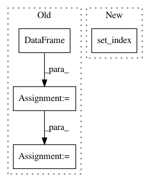

a3b39f9e6e7e1b33a3eb9919923d939430b60b86,QUANTAXIS/QAFetch/QATdx.py,,QA_fetch_get_stock_latest,#Any#Any#Any#,157
Before Change
code = [code] if isinstance(code, str) else code
api = TdxHq_API(multithread=True)
with api.connect(ip, port):
data = pd.DataFrame()
for item in code:
market_code = __select_market_code(item)
__data = api.to_df(api.get_security_bars(
9, market_code, item, 0, 1))
__data["code"] = item
data = data.append(__data)
data["date"] = data["datetime"].apply(lambda x: x[0:10])
data["date_stamp"] = data["date"].apply(
lambda x: QA_util_date_stamp(x))
data["date"] = pd.to_datetime(data["date"])
data.set_index("date", drop=False, inplace=True)
data["date"] = data["date"].apply(lambda x: str(x)[0:10])
return data.drop(["year", "month", "day", "hour",
"minute", "datetime"], axis=1)
After Change
with api.connect(ip, port):
data = pd.concat([api.to_df(api.get_security_bars(
9, __select_market_code(item), item, 0, 1)).assign(code=item) for item in code], axis=0)
return data\
.assign(date=pd.to_datetime(data["datetime"]
.apply(lambda x: x[0:10])), date_stamp=data["datetime"]
.apply(lambda x: QA_util_date_stamp(str(x[0:10]))))\
In pattern: SUPERPATTERN
Frequency: 3
Non-data size: 4
Instances
Project Name: QUANTAXIS/QUANTAXIS
Commit Name: a3b39f9e6e7e1b33a3eb9919923d939430b60b86
Time: 2017-09-01
Author: yutiansut@qq.com
File Name: QUANTAXIS/QAFetch/QATdx.py
Class Name:
Method Name: QA_fetch_get_stock_latest
Project Name: catalyst-cooperative/pudl
Commit Name: fbd16b4f301f09b8868b60a4762700f3251e2cdc
Time: 2019-12-05
Author: zane.selvans@catalyst.coop
File Name: src/pudl/transform/ferc1.py
Class Name:
Method Name: plant_in_service
Project Name: QUANTAXIS/QUANTAXIS
Commit Name: d39a96438f653fca7882ae558bf84f103b835f0b
Time: 2020-12-20
Author: nehcuh@szu.edu.cn
File Name: QUANTAXIS/QAFactor/data.py
Class Name: DataApi
Method Name: get_groupby